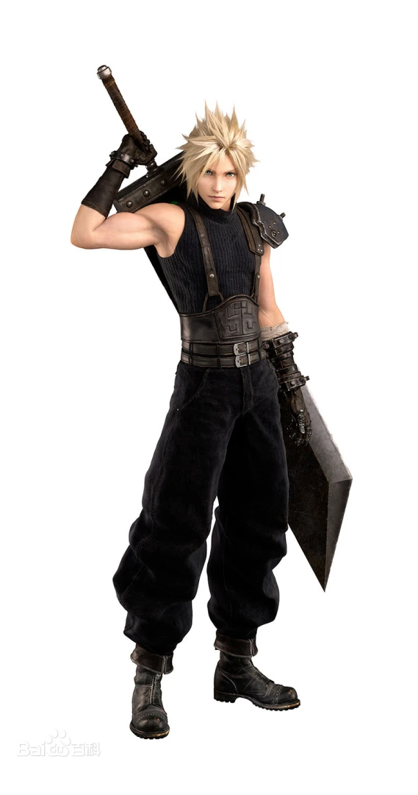

克劳德·斯特莱夫（日文：クラウド・ストライフ；英文：Cloud Strife），是日本史克威尔公司出品的电子游戏《最终幻想VII》中的男主角。
克劳德·斯特莱夫自小性格内向，沉默寡言，内心充满矛盾。性格中的矛盾冲突强烈，在命运的邂逅下，开始投身拯救星球的旅途中。
克劳德原本是神罗公司的士兵，从神罗脱离后，在米德加担任雇佣兵。后被青梅竹马的蒂法·洛克哈特说服，以佣兵身份为雪崩组织作战。背负着破坏剑，为钱而工作。并没有抱负着守护星球这样的思想，说到底不过是工作——就是这样
克劳德的经典之处在于他的性格。生性内敛，沉默寡言，气质忧郁，而在 重制版中又进一步展现出他富有人情味和可爱的一面，既闷骚又傲娇，十分讨人喜欢。克劳德总是给人一种冷漠而难以接近的形象，还喜欢说“没兴趣”，但实际上那只是杰诺瓦的细胞所制造出来的假象，真正的克劳德在精神上并没有成为战士的实力，他很被动，而且总是以冷漠来掩饰内心的孤独，是个很脆弱的人，也从非同寻常的经历中成长。